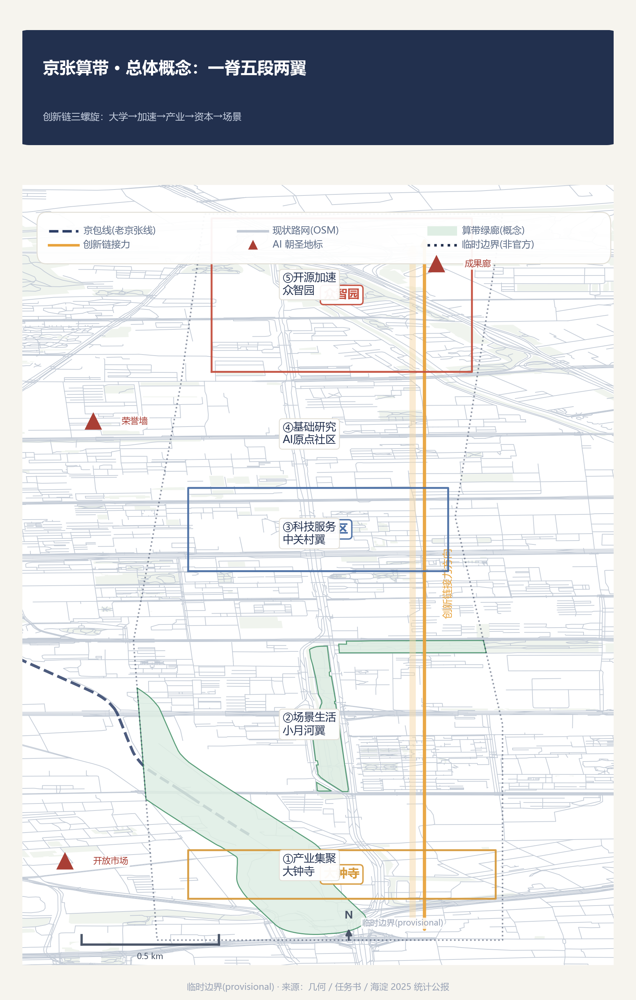
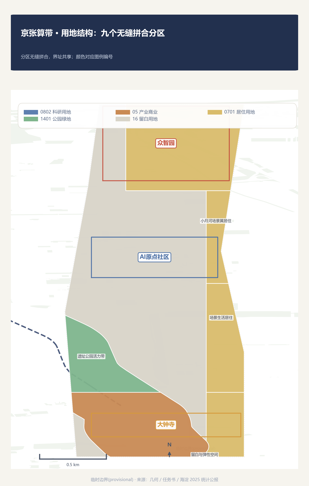
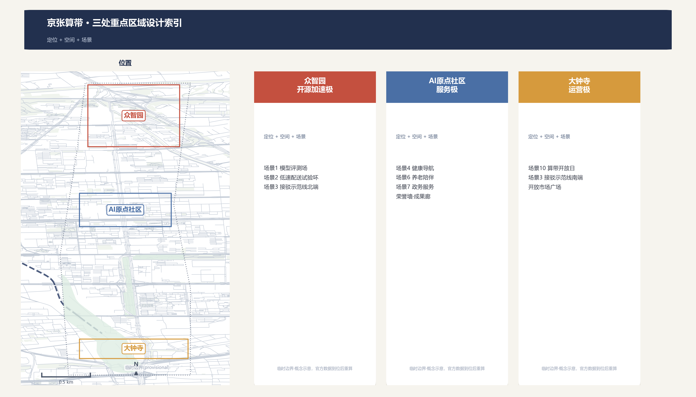
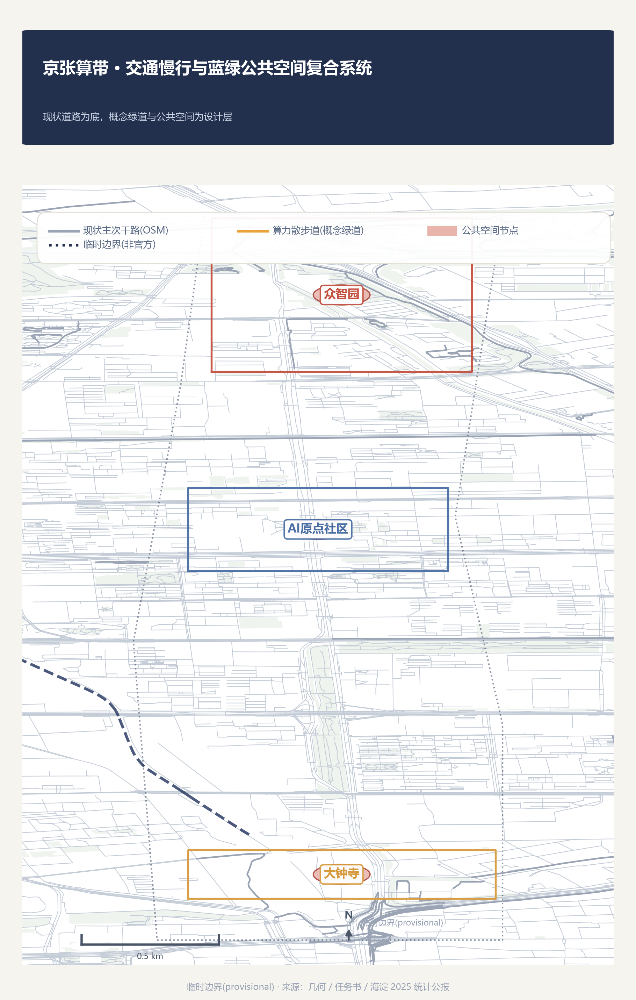
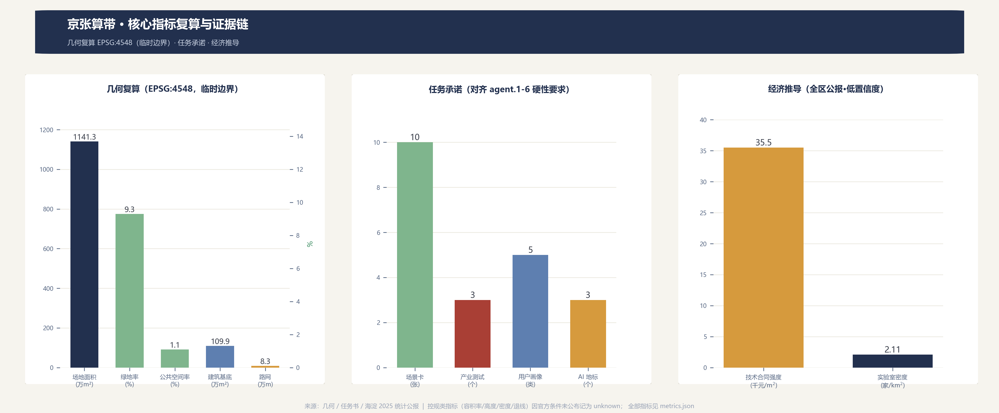

京张算带 / Jing-Zhang Compute Belt：让同一条走廊完成第二次基础设施跃迁
把百年京张铁路走廊定义为智能时代的基础设施带：以算力为新一代公共基础设施，用创新链五段接力（基础研究—开源加速—产业集聚—科技服务—场景生活）组织三区两翼，以海淀公开统计数据和开源智算栈「众智」为锚点，形成可复算、可演进的城市设计方案。
京张算带 / Jing-Zhang Compute Belt
让同一条走廊完成第二次基础设施跃迁。
一百年前，詹天佑在这里主持修建了中国第一条自主干线铁路。今天，京张铁路遗址公园走廊两侧集聚了北京 60% 的备案上线大模型和全国 17.9% 的全国重点实验室。本方案提出：把这条走廊定义为智能时代的基础设施带——「算带」。铁轨是工业时代的基础设施，算力是智能时代的基础设施；走廊从「铁轨带」到「算力带」的跃迁，是同一片土地上基础设施逻辑的第二次展开。来源 来源 标准

设计依据与资料清单
本方案以资格预审公告、面向智能体任务书、场地包临时边界、海淀区 2025 年统计公报和 OpenStreetMap 公开测绘为设计依据。空间生成只使用仓库内已登记的临时粗略边界；区级经济数据仅作背景与推导依据，不构成地块级断言。来源 来源 来源；此外，来源 来源
当前未获得官方 SITE_BOUNDARY 与三处 KEY_AREA polygon。本方案锁定的总体范围与重点区均标记为 official_boundary=false、geometry_role=provisional_constraint、boundary_precision=provisional_rough，只能支持概念生成、内容评审与替换后的复算，不能作为红线、权属、控规或工程依据。来源 空间数据 深度
控规条件（容积率、建筑高度、建筑密度、绿地率、退线）均未由组织方公布，planning_limits.json 将其标记为 missing。本方案相应指标统一记为 status=unknown，并说明待正式数据补齐后的复算路径；不把任何概念体量伪装为法定控制值。来源 指标 深度
三层范围工作框架
三层范围以同一条创新链逻辑贯通：统筹研究范围回答「创新生态如何组织」，总体设计范围回答「空间结构如何承载创新链」，重点区域范围回答「具体场景如何在街区内落地」。来源 深度
| 层级 | 面积 | 工作目标 | 本方案回答 |
|---|---|---|---|
| 统筹研究范围 | 约 43.6 km² | 产业生态与未来城市战略 | 三定位、五功能、三区两翼协同回路、8 个全球案例、命名体系 |
| 总体设计范围 | 约 11.4 km² | 城市更新与控规深度城市设计 | 五段接力空间结构、用地分区、蓝绿公共空间、分期实施 |
| 重点区域范围 | 约 3.684 km² | 三个重点区详细设计 | 众智园验证极、原点社区服务极、大钟寺运营极 |
官方 polygon 缺失期间，本方案以临时边界（面积复算约 1,141.28 公顷）完成空间生成与指标复算；官方数据到位后，需替换 site_boundary.geojson、key_areas.geojson 并重算全部面积类指标。来源 指标 深度

统筹研究范围产业与未来城市研究
三大定位与五大功能
本方案以「百年京张文化带、都市 AI 生活体验带、AI 融合创新带」为三项定位，与任务书一致；将五大功能解释为创新链上的五个连续动作：基础研究（全栈自主创新）、试验加速（世界级创新生态）、场景转化（AI+ 场景赋能）、活力承载（智能化 AI 活力城市）、治理参与（AI 治理话语权）。五项功能不是五个园区标签，而是同一创新链的环节。来源 标准
命名体系：京张算带
主名「京张算带 / Jing-Zhang Compute Belt」取「算」的三重含义：算力（智能时代的基础设施）、计算（AI 本体）、可复算（本方案的方法论——一切空间决策可复算、可审计）。历史闭环叙事：詹天佑修建的是物理时代的基础设施（铁轨），今天走廊铺陈的是智能时代的基础设施（算力）；从「工程奇迹」到「算力枢纽」，同一条走廊完成两次基础设施跃迁。来源 标准
子品牌体系：算带枢纽（三重点区）、算带走廊（遗址公园活力带）、算力散步道（文化导览绿道）、算带开放日（年度活动）、开源成果展示廊与智能体贡献荣誉墙（公共展示体系）。Logo 方向为「人字展线 × 数据总线」双意象：上部为詹天佑人字展线变形，下部为并行数据总线，形成「值」字负形；深海军蓝（可审计基础设施）、琥珀（当班/活跃）、信号绿（安全可用）、珊瑚红（需接管/停用）构成主色。来源 深度
三区两翼：创新链的空间展开
三区两翼不是五个并列园区，而是创新链五段的空间映射：来源 空间数据
- 北京 AI 原点社区 = 基础研究段。高校实验室共址圈；「原点」双关 AI 发源点与空间坐标系原点。
- 众智园 AI 自主创新加速区 = 开源加速段。命名呼应开源智算系统软件栈「众智」（公报 2025 表述「统一开源智算系统软件栈『众智』迭代升级，彻底摆脱国外智算系统软件栈技术依赖」；命名关联为推断，公报未直接说明两者关系），承担中试平台、开源协议市、模型评测场。来源
- 大钟寺 AI 产业集聚区 = 产业落地段。智能原生新业态与运营场景，依托干线交通节点。
- 中关村科技服务翼 = 资本/IP/要素配置段（金融机构 1,568 家、技术合同成交额 4,053.1 亿元的流转节点）。来源
- 小月河场景赋能翼 = 场景生活段。AI+ 生活服务与真实用户池（常住人口 311.1 万人）。来源
全球案例：只借机制，不搬规模
| 案例 | 借入机制 | 明确不照搬 |
|---|---|---|
| 新加坡 Punggol Digital District | 数字平台与真实环境试验联动 | 集中化监控架构、未经本地论证的数据范围 |
| Helsinki Kalasatama | 小规模限时真实用户敏捷试点、到期退出决策 | 强制居民参与 |
| Seoul AI Hub | 教育—孵化—研究—开放创新的阶段服务 | 资金规模与政策承诺 |
| Cambridge The Foundry | 创新区保留免门禁社区公共界面 | 固定面积指标 |
| 深圳 | AI 拆成责任单位场景清单 | 天际线、密度、全城平台规模 |
| 重庆 | 小切口闭环（核实—预警—分类—协同） | 山地立体造型、网红化景观 |
| Paris Station F | 项目+日常配套组织创业服务 | 园区体量、运营模式复制 |
| 杭州云栖小镇 | 开发者社区+年度活动品牌 | 会展经济依赖 |
这些案例均来自机构或项目公开页面，仅作机制比较，不支撑本地法定空间或成效承诺。来源 来源 来源；此外，来源 来源 来源；此外，来源 来源
海淀的数据底数：为什么这里可以成为算带
区级公开数据显示创新要素已经在此集聚：备案上线大模型 123 款（占北京全市 60%）、全国重点实验室 92 家（占全市 63.4%、全国 17.9%）、技术合同成交总额 4,053.1 亿元（+6.5%）、计算机通信和电子设备制造业产值 1,887.1 亿元（+7.7%）、信息传输/软件/信息技术服务业投资增长 1.5 倍。这些数据是「算带」定位的宏观证据——走廊两侧已是 AI 要素最密集的城区，本方案的空间设计是为已有集聚提供结构。来源 指标 指标
总体设计范围城市更新与控规深度城市设计
总体结构：一脊五段、两翼串联
「算带」的总体空间结构为一脊（遗址公园活力带）、五段（创新链五段接力）、两翼（中关村科技服务翼、小月河场景赋能翼）。遗址公园带是物理脊梁与「总线」——铁轨意象转化为数据总线意象，串联五个创新段；五段沿走廊依次展开，共享同一人才池与公共服务网络。来源 空间数据 深度
用地意向采用九个完整拼合分区（从临时边界切割，共享边界坐标，无缝隙无重叠），证明机器可复算与功能结构一致；该分区是概念意向，不是把临时边界切成法定地块。空间数据 指标 深度
五段接力：为什么空间相邻性决定创新效率
经济学逻辑：创新链各环节对空间相邻性的需求不同。基础研究依赖面对面交流（知识溢出随距离快速衰减），必须与高校共址；中试与加速需要专用试验空间（中间产品）；产业化需要交通可达性；资本/IP 服务需要集聚密度；场景生活需要真实用户。五段接力是按「相邻性需求」编排的空间秩序——把最需要近距离共址的环节放在走廊核心，把标准化程度高的环节推向可达性节点。来源 深度
更新逻辑与功能比例
本方案以「保留为主、改造为辅、新建为补」为更新基调：遗址公园带与现状社区以保留活化为主；三个重点区以功能置换与渐进更新为主；新建集中于概念建筑体块（11 栋概念体块，重点区示意）。保留/改造/拆除/新建的确切分类依赖现状建筑、权属与工程条件调查，本方案将其列为待确认事项，不作出地块级结论。来源 指标 深度；此外，深度
重点区域详细设计

1. 众智园：开源加速极（验证值守厅）
定位为「先证明能安全停下，再证明能工作」的开源验证场，命名呼应开源智算栈「众智」。空间结构：公共评测广场 + 中试平台 + 低速机器人隔离试验环 + 开源协议市。功能承载：模型评测开放场（场景卡 1）、低速配送试验环（场景卡 2）、自动驾驶接驳示范线北端（场景卡 3）。风险提示：试验场景的时段、速度、气象与人工监管条件需在运营阶段细化为硬约束；本方案只做概念布置，不构成工程可行性结论。来源 空间数据 深度
2. 北京 AI 原点社区：服务极（服务值守厅）
定位为「没有 App 也能完成服务」的 AI 公共服务社区接口，依托高校实验室共址圈。空间结构：免登录人工服务台 + 社区反馈工作室 + 文化展示节点（智能体贡献荣誉墙、开源成果展示廊）。功能承载：AI+健康导航（场景卡 4）、社区养老陪伴（场景卡 6）、政务服务柜台（场景卡 7）。所有服务保留纸本、柜台、电话等非数字替代路径；不进行医疗、法律或行政决定的自动化，只做信息导航、材料提示与人工转接。来源 空间数据 深度
3. 大钟寺：运营极（运营值守厅）
定位为「算带开放日的常设主场」与智能原生产业运营节点，依托大钟寺交通枢纽的可达性。空间结构：智能原生综合体 + 算力开放市场广场 + 开发者社区空间。功能承载：算带开放日（场景卡 10）、自动驾驶接驳示范线南端（场景卡 3）、年度活动体系主场。风险提示：产业功能与居住功能的混合比例、停车与货运组织依赖控规与交通专项数据，列为待确认。来源 空间数据 深度
AI 创新生态、人才画像与 AI+ 场景
五类用户画像
1. 初创 AI 工程师（28 岁）：众智园孵化器入驻者，需要评测台、中试环、开源协议市与 24 小时开放工位。 2. 高校科研人员（35 岁）：原点社区实验室成员，需要共址交流空间、数据沙盒与成果展示节点。 3. 跨境开发者（30 岁）：数字游民，需要多语界面、国际活动与长时开放空间。 4. 社区长者（70 岁）：小月河翼居民，需要免登录人工服务与完全非数字化的替代路径。 5. 中小学生家庭：学院区居民，需要 AI 教育空间与安全的公共场域。
五类画像对应五种空间与服务诉求，映射到场景卡与空间图层；画像基于公开的人口结构（外来人口占 33%）与教育设施底数（中小学 183 所、社区卫生服务中心 239 个）推定，非实地调研结论。来源 指标
十张 AI 场景卡
每张场景卡均填写六项值守表：服务时段、数据边界、责任到人、非数字替代、停用阈值、恢复维护。来源 标准 指标
| # | 场景 | 落位 | 类型 | 服务对象 |
|---|---|---|---|---|
| 1 | 开源模型评测开放场 | 众智园 | 产业测试 | 初创工程师 |
| 2 | 低速机器人配送试验环 | 众智园 | 产业测试 | 初创工程师/社区 |
| 3 | 自动驾驶接驳示范线 | 走廊—大钟寺 | 产业测试 | 通勤人群 |
| 4 | AI+健康服务导航 | 小月河翼 | 生活服务 | 社区长者 |
| 5 | AI+教育自适应课堂 | 学院区 | 教育 | 中小学生家庭 |
| 6 | AI+社区养老陪伴 | 原点社区 | 社区服务 | 社区长者 |
| 7 | AI+政务服务柜台 | 中关村翼 | 公共服务 | 企业/居民 |
| 8 | 算力散步道文化导览 | 遗址公园带 | 文旅 | 游客/居民 |
| 9 | 贡献荣誉墙+成果展示廊 | 原点社区 | 文化地标 | 开发者/公众 |
| 10 | 算带开放日·开发者社区 | 大钟寺 | 运营活动 | 开发者/公众 |
三张产业测试场景（1-3）均设置「停用阈值」：精度下降、环境越界、异常投诉或设备故障达到阈值即自动降级、隔离或下线；测试时段与公共时段分离，公众不被默认纳入测试。来源 标准 指标
六项值守表模板（以场景卡 1「开源模型评测开放场」为例完整填写）：
| 值守项 | 内容 |
|---|---|
| 服务时段 | 工作日 10:00-18:00 评测场开放；夜间仅限预约的受控评测 |
| 数据边界 | 仅提交方声明公开的模型信息可展示；评测数据留存 90 天，可删除 |
| 责任到人 | 当班评测员 + 升级联系人 + 处置时限（30 分钟响应） |
| 非数字替代 | 人工登记台、纸质基准说明、电话咨询 |
| 停用阈值 | 精度异常、评测环境越界、异常投诉或设备故障任一触发即停用 |
| 恢复维护 | 恢复前完成工单、版本、原因与人工复核记录 |
其余九张场景卡按同一模板在运营阶段细化，正文不再逐张展开。来源 标准
无障碍与适老要求贯穿全部场景：公共界面保持免登录人工服务路径与连续无障碍设计，符合无障碍环境建设法规与老年人智能技术应用便利化要求；任何 AI 服务的引入不得以牺牲弱势群体可及性为代价。标准 标准
用地、建筑规模与拆改留方案
用地布局覆盖九个拼合分区（科研 0802、教育科研 0802、产业商业 05、居住 0701、绿地 1401、留白 16），各分区面积均可从 geometry/land_use.geojson 复算。概念建筑体块共 11 栋（基底约 109.9 万平方米，均为概念示意，非现状或批准建筑）。空间数据 空间数据 指标；此外，深度
控规指标（容积率、建筑高度、建筑密度、退线）全部为 status=unknown：组织方尚未公布控规条件，任何数值都将是编造；待正式控制条件到位后，本方案的概念体量可按公式复算校准。指标 指标 深度
交通、轨道、市政与公共服务设施
交通组织以现状路网（OSM 主干路/次干路接入，路网总长约 8.3 万米）为骨架，新增「算力散步道」概念绿道（沿京包线/老京张线线形）作为慢行主轴；三重点区各设轨道站点接驳节点（概念线，依赖轨道专项数据确认）。来源 空间数据 指标；此外，指标 深度
市政与新型基础设施：本方案提出「端侧算力 + 分布式能源 + 传统市政融合」的概念方向（推理节点嵌入公共空间、供冷供热与算力废热协同），属方向性建议，依赖市政专项调查，列为待确认。来源 深度

蓝绿空间、公共空间与城市风貌
算带绿廊：遗址公园活力带
以京张铁路遗址公园（OSM 已测绘）为锚点，沿京包线线形构建概念绿廊（绿色空间约 106.3 万平方米，绿地率约 9.3%，概念值），串联元大都城垣遗址公园、东升八家郊野公园、小月河滨水空间，形成「铁轨绿脊 + 蓝绿支脉」的公共空间网络。来源 空间数据 指标；此外，指标 深度
三个 AI 朝圣地标
1. 智能体贡献荣誉墙（原点社区）：永久纪念体系，镌刻参与城市设计共创的 Agent 与贡献者；碑刻每年更新，呼应「贡献可记忆」共创宪章。来源 2. 开源成果展示廊（众智园）：沿众智园公共评测广场布置，展示开源模型、开放基准与开发者成果。 3. 算力开放市场广场（大钟寺）：年度算带开放日的常设主场，开发者集市与协议签署空间。
三个地标均为概念设计，不是已批准建设；相关人物、企业标识需清权后方可制作。来源 指标 深度
更新项目清单、实施政策与分期计划
三期实施
- 一期·原点社区与遗址核心段（约 39.982°N 以北的走廊核心）：荣誉墙、服务台、绿廊首段——「先证明服务可信」。
- 二期·众智园与北段：评测场、试验环、开源协议市——「再证明试验可控」。
- 三期·大钟寺与南段两翼：综合体、开放市场、两翼场景——「最后证明运营可持续」。
分期逻辑为「可信—可控—可持续」，与五段接力的成熟度匹配；各期面积见 geometry/phasing.geojson。来源 空间数据 指标；此外，指标 深度
全球 AI 创新活动体系与长期运营
本方案提出「算带开放日」年度活动品牌（开源协议市 + 黑客松 + 成果展示 + 开发者社区运营），配套季度开发者工作坊与公共体验路线。活动、招商、资金、政策与运营安排均为概念建议或深化方向，不表述为已确定政府安排。来源 深度
指标体系、面积复算与合规矩阵
核心指标分三类：几何复算类（场地面积 1,141.28 公顷、绿地率 9.3%、公共空间率 1.1%、建筑基底 109.9 万平方米、路网 8.3 万米——全部从 GeoJSON 以 EPSG:4548 复算）；任务承诺类（场景卡 10、测试场景 3、画像 5、AI 地标 3——与任务书硬性要求对齐）；经济推导类（技术合同强度 35,513 元/㎡、实验室密度 2.11 家/km²——全区公报推导，低置信度）。来源 指标 指标；此外，指标 指标 指标；此外，深度
指标的完整来源、公式、置信度与假设见 metrics.json；任务覆盖见 compliance_matrix.json；标准覆盖见 standard_matrix.json；设计深度证据见 design_depth_matrix.json。

风险、版权与合规说明
- 资料边界：仅使用公开或清权资料；未使用非公开规划图件、内部指标或个人隐私信息。来源
- 临时边界：全部几何为 provisional_rough，不得作为红线、控规、审批或工程依据；官方数据到位后需重算。来源
- 概念属性：所有空间落地建议为概念建议、参考方案或供专业团队深化材料；不构成政府审定结论或实施承诺。
- 「众智」锚点：开源智算栈「众智」与「众智园」命名关联为推断（公报未直接说明），表述为「命名呼应」。
- AI 生成披露：本方案由 Claude Code（AI Agent）生成，来源与生成方式见
report/copyright_statement.md；生成图像/媒体均属解释层，不冒充现场、居民意见、官方边界或实测数据。 - 待补资料：官方 polygon、控规条件、现状建筑与权属、市政专项、轨道数据——逐项列入
sources.json的缺口登记。深度
参考资料
1. 北京市规划和自然资源委员会海淀分局：《百年京张AI创新带城市设计国际方案征集资格预审公告》，2026-05-09。来源 2. 《面向全球智能体开展百年京张AI创新带城市设计开源征集》任务书摘录（用户提供清权材料），2026-05-18。 3. 海淀统计局队：《海淀区2025年国民经济和社会发展统计公报》，2026-04-10 发布。来源 4. 住房和城乡建设部：《城市设计管理办法》，2017。 5. 住房和城乡建设部：《城市、镇控制性详细规划编制审批办法》，2011。 6. 自然资源部：《国土空间调查、规划、用途管制用地用海分类指南》，2023。 7. 国家网信办等：《生成式人工智能服务管理暂行办法》，2023。 8. OpenStreetMap（ODbL）：海淀区京张走廊铁路/道路/绿地/水系测绘数据，2026-08-11 拉取。 9. 开源智算系统软件栈「众智」：海淀区2025年统计公报「科技」条目披露，2026。